Radiobiología
Física de la radioterapia. Máster de Física Biomédica
Los efectos biológicos sobre el tejido vivo irradiado se producen en una secuencia de varias etapas
La Radiobiología estudia los fenómenos que relacionan la absorción de energía procedente de radiaciones ionizantes con la producción de efectos biológicos.
Fases de la radioterapia
Los efectos biológicos de la radiación provienen casi exclusivamente de la modificación de la estructura del ADN
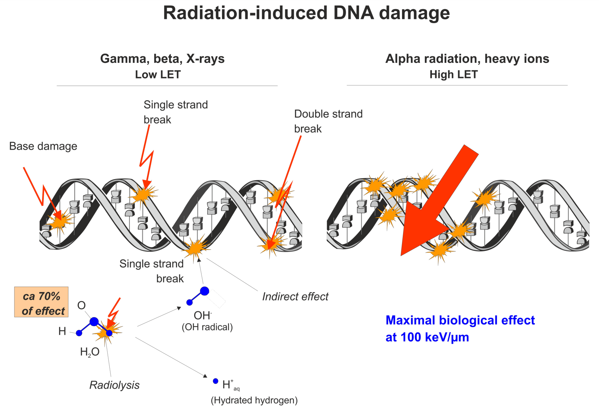Tomado de Cheng, Lei. Factors modifying cellular response to ionizing radiation. 2019. Tesis Doctoral. Department of Molecular Bioscience, The Winner-Gren Institute, Stockholm University.
Mecanismos de interacción radiación-ADN
Directo: la radiación interacciona con el ADN e induce un cambio en su estructura química
Indirecto: la interacción de la radiación con otras moléculas presentes en la célula, fundamentalmente el agua, produce por ionización la producción de radicales libres (\(OH^{*}\) principalmente, también \(H_3O^{+}\), \(H^{+}\), etc). Los radicales libres pueden alterar el ADN si reaccionan con él.
Daños en el ADN
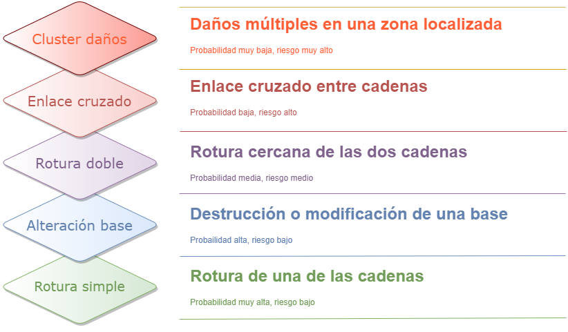Debido a la presencia de mecanismos de reparación del ADN, los daños simples no suelen dar lugar a efectos biológicos
Efectos sobre la célula
Radiosensibilidad celular
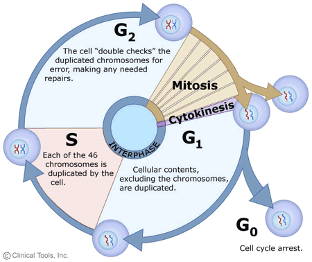Las células son más radiosensibles en las fases G2 y M (Mitosis) del ciclo celular
Las células con mayor capacidad de proliferación son más sensibles a la radiación, porque los cambios en el ADN se expresan más frecuentemente durante la división celular.
Este efecto explica la efectividad de la radioterapia contra el cáncer, puesto que los tumores son siempre procesos proliferativos.
Los tejidos sanos más sensibles a la radiación son aquellos en los que las células se multiplican más deprisa: piel, mucosas del tubo digestivo, médula ósea…
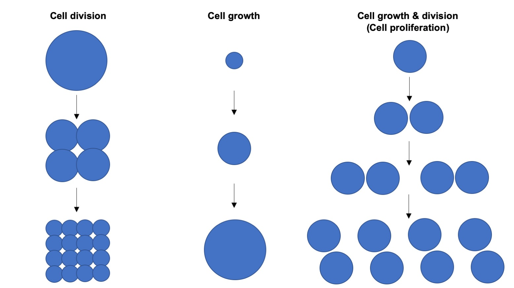Relación entre las magnitudes físicas y los efectos biológicos
Experimentalmente se observó que la magnitud de los efectos biológicos de la radiación se puede relacionar con la dosis absorbida \(D\) suministrada
\[D = \frac{E}{M}\]
La dosis absorbida \(D\) es un parámetro puramente físico.
La prescripción de los tratamientos se expresa en unidades de dosis absorbida, Gy
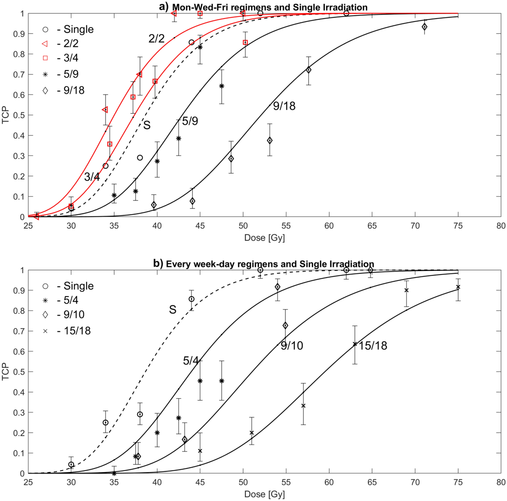
Dosis radiobiológicamente equivalente \(D_{\text{RBE}}\)
Es fácil observar que, para una misma dosis absorbida administrada \(D\), los efectos biológicos dependen mucho del tipo de radiación.
La Dosis radiobiológicamente equivalente \(D_{\text{RBE}}\) toma en cuenta las diferencias de efecto biológico entre distintos tipos de radiación mediante un factor de calidad \(F_{\text{RBE}}\) sin unidades.
\[ D_{\text{RBE}} = D\, F_{\text{RBE}}\]
\(F_{\text{RBE}} = 1\) para haces de fotones. Para cualquier otra radiación \(D_{\text{RBE}}\) representa la dosis \(D\) de fotones que tendríamos que dar para obtener el mismo efecto biológico.
Factor de eficiencia radiobiológica \(F_{\text{RBE}}\)
\(F_{\text{RBE}}\) depende del tipo y la energía de la radiación
El valor de \(F_{\text{RBE}}\) cambia fundamentalmente con la densidad de energía depositada a lo largo de la trayectoria de la partícula de radiación, es decir, con la transferencia lineal de energía.
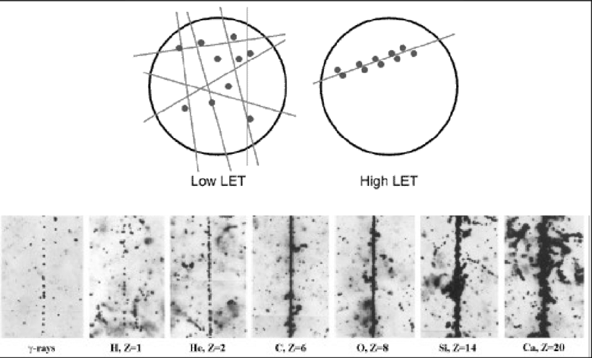Valores típicos de \(F_{\text{RBE}}\)
| Radiación | LET (keV/\(\mu\)m) | \(F_{\text{RBE}}\) |
|---|---|---|
| Fotones | < 10 | 1 (normalización) |
| Electrones | < 10 | 1 |
| Protones | Entre 10 y 100 | 1.2 (convenio) |
| Iones C | > 100 | (2, 3) |
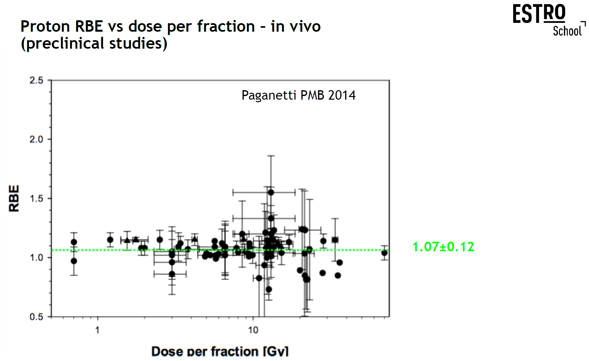
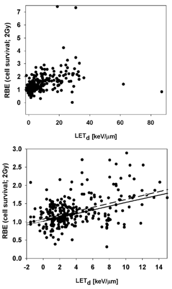
En esta gráfica se representa la diferencia de LET respecto a los fotones.
\(\text{LET}_\text{}d\) representa el LET promediado por la dosis.
LET y efecto biológico
Alta LET
- Mayor efecto biológico
- Predominio del mecanismo directo de interacción con el ADN
- Lesiones letales
Baja LET
- Menor efecto biológico
- Predominio del mecanismo indirecto de interacción con el ADN
- Lesiones reparables
Estudios experimentales de Radiobiología
La aproximación más simple y directa es la irradiación de cultivos celulares in vitro
- Se prepara una suspensión de las células de interés
- Se deposita la suspensión sobre placas de Petri con nutrientes
- Se observa el crecimiento macroscópico de grupos de células llamados clonógenos
- Se irradian las placas a diferentes valores de dosis
- Se estudia la variación del número de clonógenos con la dosis de radiación
Experimento de supervivencia celular con radiación de alta LET
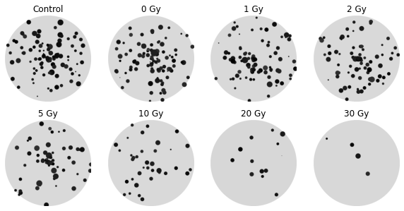Curva de supervivencia celular con radiación de alta LET
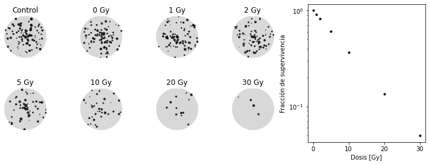Si no hay posibilidad de reparación, la reducción del número de células con la dosis es proporcional a la dosis: modelo exponencial
Experimento de supervivencia celular en tejidos de alta proliferación con radiación de baja LET
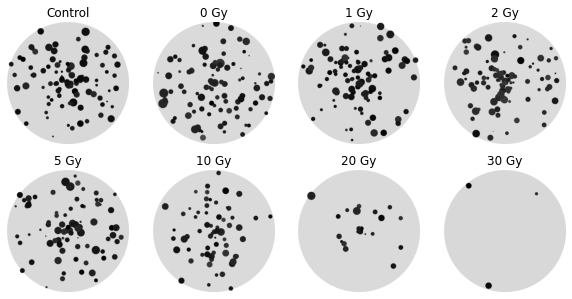Curva de supervivencia celular en tejidos de alta proliferación con radiación de baja LET
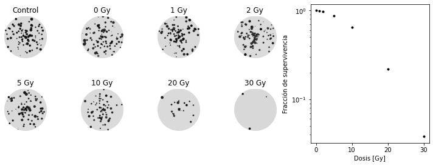Podemos interpretar que son necesarios varios daños subletales antes de inducir la muerte celular: modelo más complejo que el exponencial
Experimento de supervivencia celular en tejidos de baja proliferación con radiación de baja LET
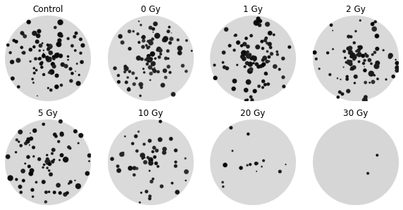Curva de supervivencia celular en tejidos de baja proliferación con radiación de baja LET
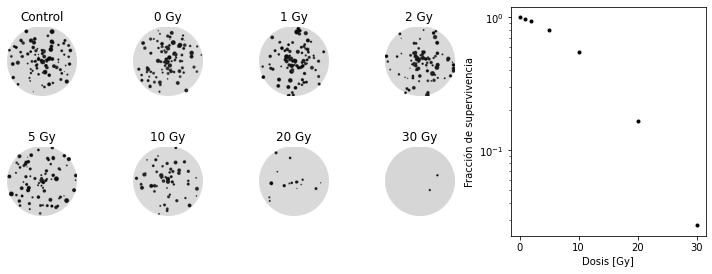Podemos interpretar que son necesarios varios daños subletales antes de inducir la muerte celular: modelo más complejo que el exponencial
Radiosensibilidad y proliferación
Cuanto mayor es la capacidad de proliferación menos dosis es necesaria para alcanzar una fracción de supervivencia dada.
\[ FS = e^{-f(D)}\]
donde \(f(D)\) es en principio desconocida y propia de cada tejido.
Una posible aproximación es considerar los primeros términos del desarrollo en serie de \(f(D)\).
Los coeficientes del desarrollo dependerán de las características de los tejidos.
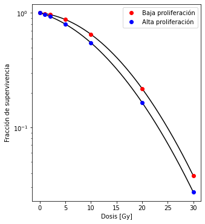
Modelo lineal-cuadrático (LQ)
La fracción de supervivencia de una población celular irradiada con una dosis \(D\) está dada por:
\[ FS = e^{- \alpha D - \beta D^2} \]
donde:
- \(\alpha\) mide la radiosensibilidad celular.
- \(\beta\) mide la capacidad de reparación de los daños celulares.
Cuanto mayor es el cociente \(\alpha / \beta\), menor es la capacidad de reparación celular.
Curva de supervivencia y fraccionamiento
Desde los comienzos de la radioterapia se conoce experimentalmente que el efecto biológico de una irradiación única con una dosis \(D\) es distinto al de una serie de \(N\) irradiaciones repetidas, cada una con una dosis \(d = \frac{D}{N}\).
La diferencia depende del tipo de tejido.
La razón es la puesta en marcha de mecanismos de reparación celular tras la irradiación.
Este mecanismo se aprovecha para disminuir los efectos secundarios sobre los tejidos sanos.
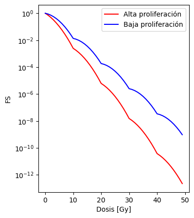
Supervivencia tras irradiación única
Si \(\beta = 0\), el fraccionamiento no tiene efecto sobre la supervivencia celular.
Supervivencia tras una sola irradiación:
\[ FS = e^{- \alpha D} \]
Supervivencia tras \(N\) irradiaciones iguales con una dosis total \(D\):
\[ FS = \prod_{i=1}^{N} FS_i = \prod_{i=1}^{N} e^{- \alpha \frac{D}{N}} = e^{- \alpha D} \]
Efecto del Fraccionamiento
Si \(\beta \neq 0\), el fraccionamiento afecta la supervivencia:
Supervivencia tras una sola irradiación:
\[ FS = e^{- \alpha D - \beta D^2} \]
Supervivencia tras \(N\) irradiaciones iguales:
\[ FS = \prod_{i=1}^{N} FS_i = \prod_{i=1}^{N} e^{- \alpha \frac{D}{N} - \beta \left(\frac{D}{N}\right)^2} = e^{- \alpha D - \beta \frac{D^2}{N}} = e^{- \alpha D \left( 1 + \frac{D/N}{\alpha / \beta} \right)} \]
Dos esquemas de tratamiento con la misma fracción de supervivencia producirán el mismo efecto biológico.
Dosis Biológica Equivalente (DBE)
La dosis biológica equivalente \(DBE\) tras \(N\) irradiaciones de la misma dosis se define como:
\[ DBE_{\alpha / \beta} = D \left( 1 + \frac{d}{\alpha / \beta} \right) \]
donde \(D\) es la dosis total y \(d = \frac{D}{N}\) es la dosis por fracción.
Su valor corresponde a la dosis física \(D\) que produciría el mismo efecto biológico si la diéramos de forma continua, haciendo \(N \to \infty\), y por tanto \(d \to 0\)
Sensibilidad de los tejidos
El cociente \(\alpha / \beta\) [Gy] determina la sensibilidad del tejido al fraccionamiento:
- Alto \(\alpha / \beta \sim 10\) implica tejidos poco sensibles al fraccionamiento: tumores, tejidos sanos de respuesta rápida.
- Bajo \(\alpha / \beta \sim 2\) implica tejidos muy sensibles al fraccionamiento: tejidos sanos de respuesta tardía, tumores lentos como el de próstata.
Dosis Equivalente con 2 Gy/sesión
Para predecir los efectos en la radioterapia, se usa la dosis total que daría una dosis equivalente con un fraccionamiento de 2 Gy/sesión (EQ2 o DBEQ2):
\[ DBEQ2_{\alpha / \beta} = \frac{DBE_{\alpha / \beta}}{1 + \frac{2 \text{ Gy}}{\alpha / \beta}} = D \times \frac{1 + \frac{d}{\alpha / \beta}}{1 + \frac{2 \text{ Gy}}{\alpha / \beta}} \]
Es una forma de renormalizar las \(DBE\) para que sus valores sean más cercanos a los fraccionamientos estándar utilizados por los oncólogos de radioterapia.
Modelos de respuesta
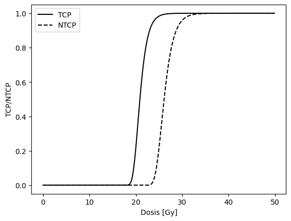
La probabilidad de producir un efecto biológico está relacionada con el número de células que sobreviven a la irradiación.
Asumimos que esta probabilidad sigue la estadística de Poisson: \[ P(D) = e^{-N_0\, FS(D)} \]
Podemos definir la probabilidad de control tumoral TCP y la probabilidad de complicaciones en tejido sano NTCP a partir de sus correspondientes fracciones de supervivencia.
Modelos de respuesta
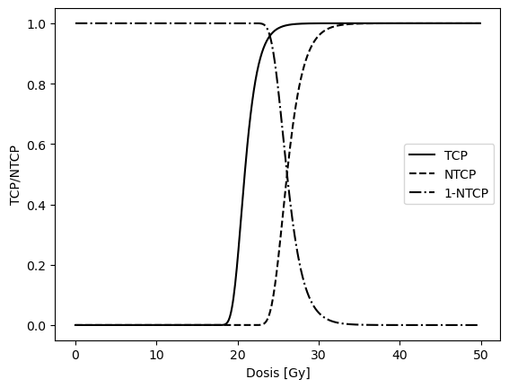\(1-NTCP\) representa la probabilidad de ausencia de complicaciones en tejido sano
Modelos de respuesta
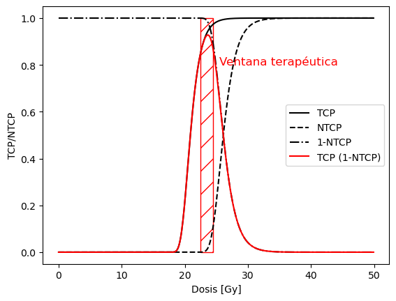El producto \(TCP (1-NTCP)\) representa la probabilidad conjunta de control tumoral y de ausencia de complicaciones en tejido sano, y nos permite definir una ventana terapéutica
Objetivo de la radioterapia
Conseguir una máxima probabilidad de control tumoral con una mínima probabilidad de complicación en tejido sano.
La definición de ventana terapéutica asume que ambos tejidos, tumoral y sano, están recibiendo la misma dosis.
En la práctica el tratamiento de radioterapia obtiene su máxima ventaja terapéutica mediante la distribución espacial de la dosis, es decir, concentrando la dosis sobre los volúmenes tumorales y reduciendo todo lo posible la dosis en el tejido sano.

Radiobiología. Física de la radioterapia